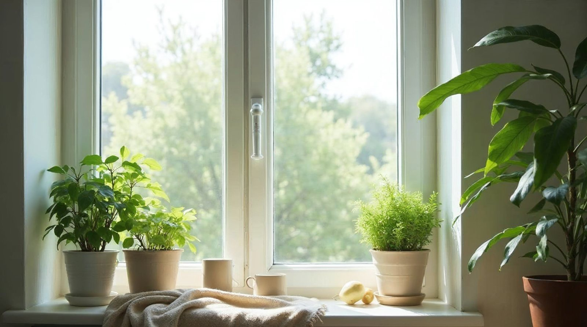
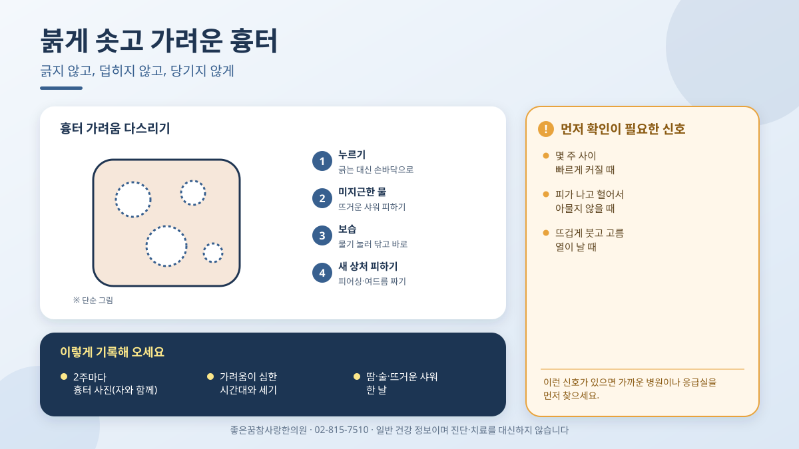

이종호 한의사 감수좋은꿈참사랑한의원 대표원장 (한의사 면허번호 19769)발행 2026-11-26 · 수정 2026-11-26
이 글의 차례
잠자리에 누워 이불을 덮는 순간, 가슴 한가운데가 근질근질해집니다. 예전에 작은 뾰루지를 짜고 난 자리였는데, 어느새 손톱만 하게 붉게 솟아올라 단단해졌습니다. 긁으면 더 커질까 봐 손바닥으로 꾹 누르며 참다가, 결국 잠이 들 때까지 한참을 뒤척입니다.
흉터 때문에 오시는 분들은 모양보다 가려움과 당김을 먼저 이야기하십니다. 보이는 것도 신경 쓰이지만, 옷이 스칠 때마다 따끔하고 날이 더워지면 더 가려워지니 하루에도 몇 번씩 그 자리에 손이 간다고 하십니다. 귀를 뚫은 자리, 제왕절개 자리, 가슴과 어깨의 여드름 자리처럼 흉터가 생기는 곳도 다양합니다.
상처가 아무는 것은 몸이 스스로 구멍을 메우는 일입니다. 그런데 어떤 분들은 이 메우는 일이 필요한 만큼에서 멈추지 않고 계속 이어집니다. 그래서 상처보다 흉터가 더 크고 두껍게 자라는 것이지요. 이것은 그분의 관리가 부족해서가 아니라 피부가 상처에 반응하는 성향의 차이인 경우가 많습니다.
이 글에서는 켈로이드와 비대 흉터가 어떻게 다른지, 왜 가렵고 당기는지, 생활에서 무엇을 조심하고 진료실에서는 무엇을 함께 살피는지를 정리해 보겠습니다.
켈로이드와 비대 흉터는 어떻게 다른가요?
둘 다 상처가 아문 자리에 살이 두껍게 솟아오르는 흉터라는 점은 같습니다. 붉거나 분홍빛을 띠고, 만지면 단단하며, 가렵거나 따끔한 느낌이 함께 오는 경우가 많습니다. 차이는 흉터가 원래 상처의 경계를 넘어가느냐에 있습니다.
비대 흉터는 원래 상처의 모양과 범위 안에서 두꺼워집니다. 수술 자리라면 꿰맨 선을 따라 솟아오르는 식입니다. 보통 상처 뒤 몇 달 사이에 두꺼워지고, 시간이 지나면서 조금씩 납작해지고 색도 옅어지는 흐름을 보이는 경우가 많습니다.
켈로이드는 원래 상처의 경계를 넘어 옆의 멀쩡한 피부까지 자라 나갑니다. 작은 뾰루지 자리가 손가락 마디만큼 커지기도 하고, 게 다리처럼 옆으로 뻗기도 합니다. 시간이 지나도 저절로 줄어드는 경우가 드물고, 다시 자극을 받으면 더 커질 수 있습니다.
흉터가 아직 붉고 단단하며 가렵다면 지금도 자라고 있는 시기일 가능성이 큽니다. 반대로 색이 피부색에 가까워지고 말랑해지며 가려움이 줄었다면 흉터가 자리를 잡아 가는 중인 경우가 많습니다. 색과 단단함, 가려움은 흉터의 지금 상태를 알려 주는 세 가지 단서입니다.
이 구분은 겉모습만으로 헷갈릴 때가 많아서 피부과의 판단을 받아 보시는 것이 좋습니다. 어느 쪽이냐에 따라 치료 방향과 앞으로의 주의점이 달라지기 때문입니다.
왜 흉터가 지나치게 자랄까요
상처가 나면 피부 아래에서는 섬유를 만드는 세포들이 바쁘게 움직이며 콜라겐이라는 실을 엮어 구멍을 메웁니다. 상처가 다 메워지면 이 일이 서서히 멈춰야 하는데, 어떤 피부에서는 멈추는 신호가 잘 전달되지 않아 실이 계속 쌓입니다. 그 결과가 두껍게 솟은 흉터입니다.
흉터가 지나치게 자라기 쉬운 조건은 어느 정도 알려져 있습니다. 진료실에서 이야기를 나눠 보면 아래와 같은 경우가 자주 겹칩니다.
- 가족 가운데 켈로이드가 있는 분이 계신 경우
- 가슴 한가운데, 어깨, 위팔, 귓불, 턱선처럼 잘 생기는 자리
- 피부가 늘 당겨지는 자리라 상처가 계속 벌어지려 하는 경우
- 상처가 덧나거나 오래 곪아서 아무는 데 시간이 걸린 경우
- 여드름이나 모낭염을 자꾸 짜거나 건드린 경우
특히 가슴과 어깨는 숨 쉬고 팔을 움직일 때마다 피부가 늘어났다 줄어드는 자리입니다. 이 끊임없는 당김이 흉터를 만드는 세포를 계속 자극한다고 보는 시각이 있습니다. 같은 크기의 상처라도 자리에 따라 흉터의 모양이 크게 달라지는 이유입니다.
왜 흉터가 가렵고 따가울까요
두껍게 자라는 흉터 안에는 새로 생긴 가는 혈관과 신경 가지가 많습니다. 흉터가 자라는 동안 이 신경들이 예민하게 반응하면서 가려움과 따끔함이 생기는 것으로 알려져 있습니다. 흉터가 붉을수록 아직 활발히 자라는 중인 경우가 많고, 가려움도 더 심한 편입니다.
몸이 더워지면 가려움이 더 도드라집니다. 뜨거운 물로 샤워한 뒤, 이불을 덮고 누운 뒤, 땀이 날 때, 술을 마신 뒤에 흉터가 더 붉어지고 가렵다는 분이 많습니다. 반대로 시원하고 습도가 적당한 날에는 한결 편하다고 하십니다.
가렵다고 긁으면 흉터에 작은 상처가 다시 생기고, 그 상처가 또 흉터를 자극하는 고리가 만들어집니다. 잠결에 긁는 일이 잦다면 손톱을 짧게 다듬어 두는 것만으로도 상처를 덜 낼 수 있습니다. 그래서 흉터 관리에서는 가려움을 다스리는 것이 모양을 관리하는 것만큼 중요합니다.
비슷해 보이지만 다른 혹과 흉터
흉터처럼 보이지만 다른 이유로 생긴 것들도 있습니다. 피부 아래 동그랗게 만져지며 가운데 작은 구멍이 있는 피지 낭종, 상처와 관계없이 생겨 점점 커지는 피부 혹, 색이 짙어지거나 모양이 불규칙하게 변하는 점 같은 것들입니다.
상처를 입은 기억이 없는데 솟아오른 혹이 생겼거나, 흉터인 줄 알았던 것이 몇 주 사이에 빠르게 커지고 피가 나거나 헐면 흉터가 아닐 수 있으니 피부과에서 확인을 받아 보시길 권합니다. 한의원에서도 진찰할 때 이런 부분이 보이면 먼저 피부과 진료를 안내합니다.
피부과 치료와 함께 가는 법
켈로이드와 비대 흉터는 피부과에서 흉터 안에 주사를 놓거나, 붙이는 실리콘 시트나 젤, 압박, 레이저 같은 방법으로 관리하는 경우가 많습니다. 어떤 방법을 쓸지는 흉터의 크기와 자리, 활동성에 따라 피부과에서 정합니다.
이런 치료는 몇 주에서 몇 달 간격으로 이어지는 경우가 많습니다. 그 사이의 가려움과 잠, 피부의 열감, 생활 습관을 살피는 것이 한의원에서 함께할 수 있는 부분입니다. 피부과 치료를 받고 계시다면 일정과 쓰시는 연고를 알려 주세요. 겹치거나 부딪히지 않게 맞춰 진료 방향을 정합니다.
흉터를 수술로 떼어 내는 경우, 켈로이드는 같은 자리에 다시 자랄 수 있어 피부과에서 수술 뒤 관리를 함께 계획하는 경우가 많습니다. 이런 결정은 피부과 선생님과 충분히 상의하신 뒤 정하시길 권합니다.
자리마다 조심할 점이 조금씩 다릅니다
귓불은 귀걸이 구멍을 뚫은 뒤 켈로이드가 잘 생기는 자리입니다. 무거운 귀걸이가 늘 당기거나 금속에 피부가 예민하게 반응하면 자극이 이어질 수 있으니, 흉터가 생기기 시작했다면 귀걸이를 쉬어 주시는 것이 좋습니다.
가슴 한가운데와 어깨는 여드름이나 모낭염 자리에서 흉터가 시작되는 경우가 많습니다. 등과 가슴에 뾰루지가 잘 나는 분은 땀이 찬 옷을 오래 입고 있지 않고, 뾰루지를 손으로 짜지 않는 것만으로도 새 흉터를 줄이는 데 도움이 될 수 있습니다.
배의 수술 자리는 앉고 일어설 때마다 접히고 당깁니다. 바지 허리선이 흉터를 문지르지 않도록 높이를 조정하고, 오래 앉아 있을 때는 가끔 허리를 펴 주세요. 무릎이나 팔꿈치처럼 굽혔다 펴는 관절 근처 흉터도 비슷하게 당김을 줄이는 쪽으로 신경 쓰시면 좋습니다.
흉터 때문에 마음이 위축될 때
흉터가 눈에 잘 띄는 자리에 있으면 옷을 고를 때마다, 사람을 만날 때마다 마음이 쓰입니다. 여름에도 긴소매를 입고, 목욕탕이나 수영장을 피하게 되었다는 말씀도 자주 듣습니다. 이런 마음은 결코 지나친 것이 아닙니다.
흉터 관리는 하루아침에 끝나는 일이 아니라서 지치기 쉽습니다. 몇 달 간격의 사진을 나란히 놓고 보면 조금씩 달라진 부분이 보이기도 합니다. 그 작은 변화를 알아차리는 것이 오래 관리를 이어 가는 힘이 됩니다.
먼저 이렇게 여쭙니다
처음 오시면 저는 대략 이런 순서로 여쭙니다. 미리 생각해 오시면 이야기가 훨씬 수월해집니다.
- 흉터는 무엇 때문에, 언제 생겼나요? 처음보다 커졌나요?
- 몸의 다른 곳에도 비슷하게 솟은 흉터가 있나요?
- 가려움이나 따끔함은 하루 중 언제 가장 심한가요?
- 가족 가운데 흉터가 크게 자라는 분이 계신가요?
- 피부과에서 받은 치료나 쓰고 계신 연고, 시트가 있나요?
- 잠, 땀, 열감, 소화는 요즘 어떠신가요?
흉터 사진을 몇 달 간격으로 찍어 두셨다면 함께 보여 주세요. 사진이 없으셔도 괜찮습니다. 크기와 색이 어떻게 변해 왔는지 보면 지금 흉터가 자라는 중인지, 가라앉는 중인지 가늠하는 데 큰 도움이 됩니다.
일상에서 먼저 해 볼 수 있는 것
흉터 관리는 자극을 줄이고 가려움을 다스리는 것이 기본입니다. 한 번에 모두 하시기보다 지금 가장 마음 쓰이는 것부터 시작해 보세요.
- 흉터를 긁거나 짜지 말고, 가려울 때는 손바닥으로 지그시 누르기
- 뜨거운 물 대신 미지근한 물로 짧게 샤워하기
- 샤워 뒤 물기를 눌러 닦고 보습제를 얇게 바르기
- 흉터를 조이거나 문지르는 옷, 가방끈, 속옷 자리 바꾸기
- 햇볕이 강한 날은 흉터를 가리거나 자외선 차단제 바르기
- 술과 맵고 뜨거운 음식이 가려움을 키우는지 살펴보기
가려움이 심한 밤에는 방을 조금 서늘하게 하고, 이불을 너무 두껍게 덮지 않는 것이 도움이 될 수 있습니다. 찬 수건을 흉터 위에 잠깐 올려 두는 것도 방법이지만, 얼음을 직접 대지는 마세요.
켈로이드가 잘 생기는 분이라면 새 상처를 만들지 않는 것이 가장 큰 예방입니다. 귀를 새로 뚫거나 문신을 하거나, 여드름을 손으로 짜는 일은 피하시는 것이 좋습니다. 수술을 앞두고 계시다면 켈로이드가 잘 생긴다는 사실을 수술하시는 선생님께 미리 알려 주세요.
한의원에서 함께 살필 수 있는 경우
- 흉터가 밤마다 가려워 잠을 설치는 경우
- 몸에 열이 오르거나 땀이 나면 흉터가 붉어지고 가려운 경우
- 피부가 전반적으로 건조하고 여기저기 가려움이 함께 있는 경우
- 여드름이나 모낭염이 반복되어 새 흉터가 자꾸 생기는 경우
- 흉터 걱정으로 긴장이 이어지고 잠이 얕아진 경우
좋은꿈참사랑한의원에 오시면 먼저 아래 '먼저 확인이 필요한' 신호가 없는지부터 봅니다. 그다음 맥을 짚고 잠과 땀, 열감, 소화, 대소변을 여쭈며, 흉터를 직접 보고 만져 봅니다.
진찰한 내용을 바탕으로 생활에서 바꿔 볼 것 하나와 함께 침, 한약 상담 가운데 지금 상태에 맞는 것을 정합니다. 흉터 위에는 직접 침을 놓지 않는 것을 원칙으로 합니다. 한약을 상의할 때는 드시는 약을 모두 확인하고 신중하게 정하며, 피부과 처방은 상의 없이 멈추지 않습니다.
임신 중이시거나 임신을 계획하고 계시다면 진료 전에 먼저 알려 주세요. 그에 맞춰 조심스럽게 정하고, 필요하면 산부인과와 상의하시도록 안내합니다.
이렇게 기록해 오시면 상담이 쉬워집니다
흉터는 하루 이틀로는 변화가 잘 보이지 않습니다. 한 달 정도 간단히 적어 보세요.
- 같은 조명, 같은 거리에서 찍은 흉터 사진(2주에 한 번)
- 가려움이 심했던 시간대와 세기(0~10)
- 땀을 흘렸거나 술을 마셨거나 뜨거운 샤워를 한 날 표시
- 긁어서 상처가 난 날 표시
- 피부과 치료를 받은 날과 쓰신 연고
자 하나를 흉터 옆에 두고 사진을 찍으면 크기 변화를 보기가 훨씬 쉽습니다. 빠진 날이 있어도 괜찮으니 편한 방법으로 이어 가 보세요.

흉터와 오래 사이좋게 지내기
흉터는 몸이 상처를 열심히 메운 흔적입니다. 조금 지나치게 열심히 메웠을 뿐이지요. 그 흔적이 가렵고 신경 쓰이는 것은 당연한 일이고, 그 불편을 줄이기 위한 방법은 여러 가지가 있습니다.
흉터를 완전히 지우는 것보다, 가렵지 않고 당기지 않으며 더 자라지 않게 하는 것을 현실적인 목표로 삼으시면 마음이 한결 가벼워집니다.
이번 주에는 가려울 때 긁는 대신 누르는 습관 하나만 들여 보세요. 다음에 오시면 사진과 가려움 기록을 함께 펼쳐 보며, 피부과 치료와 생활 관리를 어떻게 이어 갈지 이야기 나누겠습니다.
이런 증상은 먼저 확인이 필요합니다
- 흉터나 혹이 몇 주 사이에 빠르게 커지거나 피가 나고 헐어서 아물지 않는 경우
- 흉터 주위가 뜨겁게 붓고 고름이 나오면서 열이 나는 경우
이런 신호가 있으면 한의원보다 가까운 병원이나 응급실을 먼저 찾으세요.
함께 읽으면 좋은 글
- 어른이 되어 턱과 볼에 붉고 아픈 여드름이 되풀이되는 성인 여드름은 어떻게 살피나요?
- 털이 난 자리마다 붉은 뾰루지와 고름이 자꾸 올라오는 모낭염은 어떻게 살피나요?
- 가려움이 낮에 심한지 밤에 심한지는 왜 묻고, 어떻게 적어 두나요?
- 잠이 부족하면 피부가 푸석하고 트러블이 나는 이유는 무엇인가요?

여쭙는 것
- 흉터는 무엇 때문에, 언제 생겼나요? 처음보다 커졌나요?
- 몸의 다른 곳에도 비슷하게 솟은 흉터가 있나요?
- 가려움이나 따끔함은 하루 중 언제 가장 심한가요?
생활에서 해 볼 것
- 흉터를 긁거나 짜지 말고, 가려울 때는 손바닥으로 지그시 누르기
- 뜨거운 물 대신 미지근한 물로 짧게 샤워하기
- 샤워 뒤 물기를 눌러 닦고 보습제를 얇게 바르기
한의원에서 함께 살필 것
- 흉터가 밤마다 가려워 잠을 설치는 경우
- 몸에 열이 오르거나 땀이 나면 흉터가 붉어지고 가려운 경우
- 피부가 전반적으로 건조하고 여기저기 가려움이 함께 있는 경우
먼저 확인이 필요한 신호
- 흉터나 혹이 몇 주 사이에 빠르게 커지거나 피가 나고 헐어서 아물지 않는 경우
- 흉터 주위가 뜨겁게 붓고 고름이 나오면서 열이 나는 경우
한눈에 보는 표
| 구분 | 핵심 |
|---|---|
| 여쭙는 것 | 흉터는 무엇 때문에, 언제 생겼나요? 처음보다 커졌나요? 몸의 다른 곳에도 비슷하게 솟은 흉터가 있나요? |
| 생활에서 해 볼 것 | 흉터를 긁거나 짜지 말고, 가려울 때는 손바닥으로 지그시 누르기 뜨거운 물 대신 미지근한 물로 짧게 샤워하기 |
| 한의원에서 함께 살필 것 | 흉터가 밤마다 가려워 잠을 설치는 경우 몸에 열이 오르거나 땀이 나면 흉터가 붉어지고 가려운 경우 |
| 먼저 확인이 필요한 신호 | 흉터나 혹이 몇 주 사이에 빠르게 커지거나 피가 나고 헐어서 아물지 않는 경우 흉터 주위가 뜨겁게 붓고 고름이 나오면서 열이 나는 경우 |
자주 묻는 질문
켈로이드는 시간이 지나면 저절로 없어지나요?
비대 흉터는 시간이 지나며 조금씩 납작해지는 경우가 많지만, 켈로이드는 저절로 줄어드는 경우가 드뭅니다. 어느 쪽인지는 피부과에서 확인받아 보시길 권합니다.
흉터에 침을 놓나요?
흉터 위에는 직접 침을 놓지 않는 것을 원칙으로 합니다. 진찰 뒤 잠과 열감, 가려움처럼 몸 전체의 흐름을 살펴 필요한 진료를 정합니다.
피부과 주사 치료를 받는 중인데 한의원 진료를 함께 받아도 되나요?
함께 받으실 수 있습니다. 피부과 치료 일정과 쓰시는 연고를 알려 주시면 그에 맞춰 진료 방향을 정합니다.
켈로이드가 있는데 귀를 뚫어도 될까요?
켈로이드가 잘 생기는 분은 새 상처가 새 흉터로 이어질 수 있어 조심하시는 것이 좋습니다. 꼭 필요하다면 피부과와 먼저 상의해 보세요.
흉터 가려움은 언제 가장 심한가요?
몸이 더워질 때, 특히 뜨거운 샤워 뒤나 이불 속, 땀이 날 때 심해진다는 분이 많습니다. 하루 중 언제 심한지 적어 오시면 관리 방향을 정하는 데 도움이 됩니다.
좋은꿈참사랑한의원은 재진 때 지난번 이야기부터 이어서 여쭙니다. 진료시간과 예약은 오시는 길에서 확인하세요.
어디서 상담받을 수 있나요?
좋은꿈참사랑한의원은 서울 동작구 만양로2길 2 신성빌딩 3층·5층(서울 동작구 상도동, 7호선 상도역 3번 출구 근처)에 있습니다. 한의사 3명(이종호 대표원장, 조영기 수석진료원장, 정원영 진료원장)이 진료합니다. 진료시간은 평일 09:30~20:00(점심 13:00~14:00), 토·일·공휴일 09:30~15:00이며, 방문 전 전화로 확인을 권합니다. 예약은 네이버 예약, 카카오톡 상담, 전화 02-815-7510로 받습니다.
이 글은 일반적인 건강 정보이며 개인의 진단이나 치료를 대신하지 않습니다. 증상이 있거나 복용 중인 약이 있다면 진료를 통해 확인하세요. 치료 효과는 개인마다 다를 수 있습니다.
작성 기준: 일반적으로 알려져 있는 건강 정보를 참고해 정리했습니다(대표원장 감수). 증상 기록은 1~2주 동안 하루 1회, 비슷한 시간에 적어 오시면 지난 상태와 비교하기 쉽습니다.